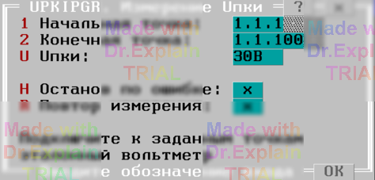

4.14 UPKIPGR. Измерение Uпки
Утилита определяет погрешность измерения постоянного напряжения блока напряжений (БН) цифровым вольтметром. После запуска отображается первое меню, показанное на рисунке ниже:

Параметры меню
- «Начальная точка» и «Конечная точка» — входы АСК, к которым подключается эталонный вольтметр. Точки могут принадлежать любому БК в конфигурации.
- «Uпки» — величина напряжения, выставляемого блоком напряжений (БН). Номинальные значения задаются в конфигурации аппаратуры.
Автоматические действия после ввода параметров 1-го меню
- Начальная заданная точка подключается к шине A1.
- Конечная заданная точка подключается к шине B1.
- Вольтметр переводится в режим измерения напряжения БН и подключается к соответствующему делителю.
- Производится измерение; в протокол выполнения выводятся сообщения вида:
$TST1 Uд.б=5В+-1.00% Uизм=5.0000В Погр=+0.00% $TST1 Измерений:1 Все норма ПОГРmin=0 ПОГРmax=+0.00%
После завершения предоставляется итоговое меню (см. п. 6.3).